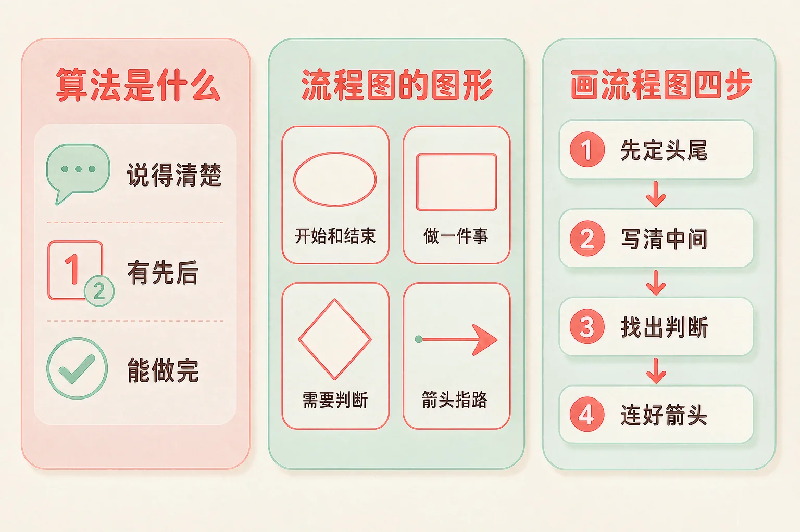
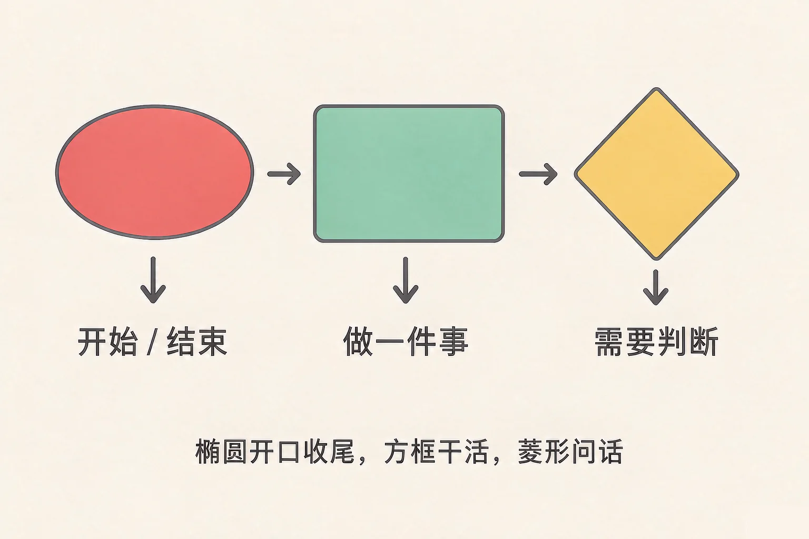
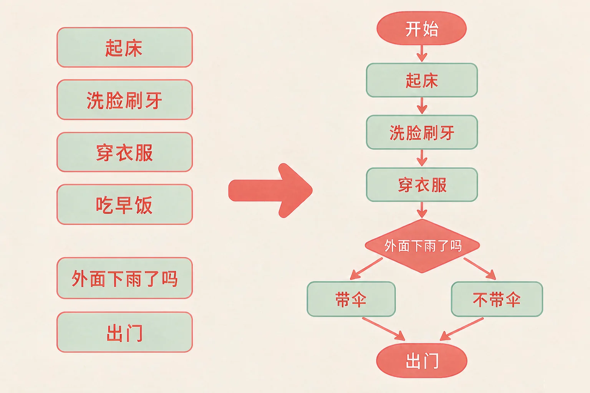

Gallery
v1.0.0 · skill v7.22.0
小学三年级 · 算法与程序
机器人看不见你，也猜不到你的想法——你该怎么把办法告诉它？

选一个你真正好奇的问题，后面的动手活动都会围着它转。
选择或输入后，这节课会围绕你的问题展开。
先凭直觉选一个，选完立刻看到解释——错了也没关系，正好知道要重点听哪里。
1. 下面哪一句可以直接当作算法里的一步？
「把水倒进杯子里」说清了做什么、在哪里做，别人照着就不会做错。错因提醒：常见错误是把步骤写得太笼统，像「弄好」「处理一下」这种说法听着省事，实际上没人知道该做什么——这也正是机器人听不懂你的原因。
2. 擦桌子的算法里，「用干布把水擦干」和「用湿布擦一遍」，哪一步应该先做？
顺序变了，结果就变了：先擦干再擦湿，桌子最后还是湿的。错因提醒：不少同学误认为「每一步都做了就没问题」。算法里真正要紧的恰恰是谁先谁后。
3. 流程图里，表示「需要判断的地方」的图形是：
菱形里写的都是一个问题，答案只有「是」或「不是」两条路。错因提醒：容易把判断画成方框——那样两条岔路就画不出来了，整张图只剩一条直路。椭圆是起点和终点，方框才是要做的事。
为什么要学这一课？
我们平时做事，凭感觉就能做完（And）；但这件事如果交给一个看不见你、也猜不到你想法的机器去做，它只会一个口令一个动作，感觉帮不上忙（But）；所以我们要学会把办法拆成清楚的步骤，写下来、画出来，让机器和别人都能照着做（Therefore）。
为了解决一个问题，把要做的事按先后顺序一条一条写清楚，这些步骤合起来就叫算法。
① 说得清楚
每一步别人照着做，都不会做错。
② 有先有后
顺序不能随便换，换了结果就不一样。
③ 做得完
步数有限，一步一步走得到头。
举个例子：接半杯温水
① 拿出一个杯子 → ② 接半杯冷水 → ③ 兑一点热水 → ④ 用手背试一下温度 → ⑤ 太烫就等一会儿。五步写完，这件事谁都做得出来了。
🔍 深层理解 换个角度再看一遍这件事，看看能不能说出背后的原理。
看见它：同一件小事，你可以直接做完，也可以一格一格地写下来——写下来的那串格子，就是算法。
解释它：为什么机器一定要先把步骤写清楚？因为它不会「看情况」，也不会「差不多就行」，它只会严格按顺序走。
比较它：同一个问题，往往不止一条算法。擦桌子的算法，是先擦桌角还是先擦中间，做得到就行——但每一条都必须自己说得清楚。
任务：让教室里的电脑放出一段视频。下面七张卡片的顺序被打乱了，请从第一步开始，一步一步点出来。
请点出你认为的第一步。
步骤一多，光用文字写就容易看乱。这时候把每一步放进图形里，再用箭头连起来，就是流程图。

把需要判断的问题也画成方框。这样一画，「是」和「不是」两条路就没了，整张图只能一直往前走——判断也就丢掉了。
先点一张卡片，再点你认为对的那个筐。每放一次都会立刻告诉你理由。
点一张卡片开始归位。
题目：请把小明的算法画成一张流程图——起床、洗脸刷牙、穿好衣服、吃早饭、看看外面下雨了没有、下雨就带伞、出门。

有同学只画了「起床 → 出门」两个椭圆，说「中间的事我记着就行」。可是流程图是画给别人和机器看的，中间那几步必须一个不落地写进方框，不然别人照着做还是做不成。
先凭直觉选一个，选完立刻看到解释——错了也没关系，正好知道要重点听哪里。
1. 下面哪一句话，可以作为算法里的一个步骤？
说清了做什么、在哪里做、对什么做，别人照着就能完成。错因提醒：「处理一下」「弄一弄」听着像步骤，其实谁也不知道该做什么，这是写算法时最常见的错误。
2. 在流程图里看到一个菱形，说明这段算法：
菱形专门留给判断：答案是或不是，两条路各自往下走。错因提醒：容易把菱形和方框搞混。记住：方框里是「做什么」，菱形里是「问什么」。
3. 下面这段算法少了哪一步：「开始 → 拿起水壶 → 把水浇进花盆 → 结束」
浇水之前要先判断土壤干不干，不然可能把花浇坏。少了判断，这条算法就不完整。错因提醒：很多同学误认为「只要动作都写了就算完整」，其实判断也是算法的一部分。
自动浇花器要自己决定浇不浇水。下面六张卡片被打乱了，请按正确的顺序点出来。
请点出你认为的第一步。
排完之后想一想，说给同桌听：
这条算法里的菱形在问什么？从它出发的两条路，最后都走到哪里去了？如果把它画成流程图，哪几个框是椭圆，哪几个是方框？
先凭直觉选一个，选完立刻看到解释——错了也没关系，正好知道要重点听哪里。
1. 电梯的算法是「先关门，再上升」。如果把这两步调换，会怎么样？
顺序变了，结果就变了。算法的先后是有意义的，不能随意调换。错因提醒：常见错误是认为「每一步都做了就行」——顺序本身也是算法的一部分。
2. 让机器人「看到红灯就停下，绿灯就前进」，画流程图时，「现在是红灯吗？」这个框应该画成：
它的答案只有「是」或「不是」，走出停和走两条路，所以是菱形。错因提醒：不要误认为「跟动作有关的就画方框」——判断句该住的是菱形。
3. 一段算法这样写：① 打开水龙头 ② 拿起杯子 ③ 接水。它的问题在哪里？
空着手去开水龙头，水就白流了。步骤得按事情真正发生的先后写。错因提醒：这一步最容易忽略，因为它「好像也能做」——但算法要求的是能稳稳当当做成。
回到开头那个机器人：它听不懂你心里想的办法。可一旦你把步骤排好、画成流程图，它就照着一步一步走——这也正是电脑干活的方式。
给别人讲一遍：请用「算法、顺序、判断」这三个词，说清楚整理书包这件事该怎么做、哪一步需要判断。
再动一动手：画出来——在你的本子上画四个方框，用箭头连起来，写出你明天早上出门的算法。
三层练习，做完第一、二层就算通关；第三层留给愿意继续探索的同学。
⭐ 基础巩固（必做）
⭐⭐ 能力应用（必做）
⭐⭐⭐ 迁移挑战（选做）
左边是学它之前要先会的，右边是学会之后可以继续探索的，下面是同一领域的伙伴知识。
图谱正在加载：首次进入需下载知识索引（约 1–3 秒），加载完成后本行会自动消失。